Graph Stylesheets are a way to associate style to node-edge representations of RDF models, but also to hide part of the graph and to offer alternative layouts for some elements. This means that based on some selectors (detailed later), it is possible to assign, among other things, color, stroke width, bitmap icons or font style to specific nodes and edges in the graph. It is also possible to hide selected nodes and edges, or to lay them out (along with the node at the other end of the edge) in tables in order to group them in a region of the visualized space.
Graph Stylesheets are themselves expressed in RDF and define their own vocabulary in a namespace with the following URI:
which will be bound to prefix gss: in the remainder of this document.
A graph stylesheet is made of a set of rules which select resources, properties and literals in an RDF model and assign styling attributes to the graphical entities that represent them in IsaViz (nodes and edges of the node-arc diagram). The left-hand side of a rule is called the selector, while the right-hand style is called the styling instruction set.
Here is a quick example of what GSS can do. The graph in figure 1-a represents part of a plain foaf document as it is displayed by IsaViz without any styling. Figure 1-b represents the same document, this time applying the GSS stylesheet for foaf to it.
The GSS stylesheet for foaf does many things, including:
All the information contained in the model is still explicitly represented in the graph (note that this is not a requirement of GSS, you can choose to hide some statements and not convey the associated information in any other manner). But instead of using a standard node-link-node representation for every statement, the stylesheet tries to convey the information in other ways, which should make the representation easier to understand as it is less cluttered and more intuitive. It is for instance much easier to identify which nodes in the graph represent persons in the styled representation of the model than in the plain representation. In the latter you have to look for nodes which have an outgoing edge pointing to resource foaf:Person, whereas in the styled representation, you just have to look for nodes which use this icon: .
Figures 1-c and 1-d give another example of what a very simple GSS stylesheet can do. Figure 1-c shows the full model representing the history of W3C Technical Reports and Publications in RDF, which is part of the effort to automate the publication of technical reports. The resources in this model correspond to the different versions of TR documents and are typed according to their status (a working draft, a proposed recommendation, a final recommendation, or a note). Moreover, each document is linked to the one it makes obsolete by an obsoletes property. Each document also has a date Dublin Core property. Figure 1-d
GSS Stylesheets in IsaViz are managed through the Stylesheets tab of the Definitions window shown in figure 2. In this window, the user can load any number of stylesheets located on their computer or available publicly on the Web. The sequence of application of these stylesheets is in descending order. This means that in the example of figure 2, coloring.gss will be applied first, then datehiding.gss and finally dateshowing.gss. In case of conflict between rules belonging to different stylesheets, the rule in the stylesheet applied last prevails.
Figure 2-a: Managing Stylesheets in IsaViz
Stylesheets are automatically applied to models imported through any command of the File/Import menu. It is also possible to apply the sequence of stylesheets manually using the Apply Stylesheets button.
The position of stylesheets into the sequence can be changed by selecting the stylesheet of interest and then using the two arrows located at the far left of the panel.
GSS being an RDF vocabulary, stylesheets can be created and edited by directly modifying their RDF model. However, a graphical front-end is also available, which allows users to specify styling rules by direct manipulation of visual entities, without having to write a single line of RDF. This front-end, shown in figure 2-b, can be accessed both as a standalone application and through IsaViz by clicking on the Edit Stylesheet button. Read Section 8. Graphical Front End for more information.
Figure 2-b: GSS Editor
There are three types of selectors : resource selectors, literal selectors, and property selectors, which each accept different properties describing the constraints that the stylesheet designer wants to express on the entities to select. The selector itself is represented by a b-node (or anonymous node), and must declare a specific rdf:type property.
A resource selector must declare an rdf:type property whose value is class gss:Resource. The following properties can be attached to the selector:
gss:subjectOfStatement and gss:objectOfStatement are described in detail later.
Figure 3 shows an example of a selector for resource http://claribole.net
Figure 3: Selecting resource http://claribole.net (SVG version)
Figure 4 shows an example of a selector for resources whose URI belongs to the Dublin Core namespace.
Figure 4: Selecting resources in the Dublin Core namespace (SVG version)
All these properties can be combined to create complex selectors. The set of properties associated with a given selector is interpreted as a conjunction of constraints on the resource(s) to select. As a consequence, gss:uriEquals and gss:uriStartsWith cannot appear together and can only appear once. They can however be combined with one or more gss:subjectOfStatement and gss:objectOfStatement properties.
Note: a resource selector which does not express any constraint will select all resources in the model. However, it still needs to declare an rdf:type property whose value is class gss:Resource.
A property selector must declare an rdf:type property whose value is class gss:Property. The following properties can be attached to the selector:
Figure 5 shows an example of a selector for rdf:type properties.
Figure 5: Selecting rdf:type properties (SVG version)
Figure 6 shows an example of a selector for properties in the RDFS namespace
Figure 6: Selecting properties in the RDFS namespace (SVG version)
As for resource selectors, gss:uriEquals and gss:uriStartsWith cannot appear together and can only appear once in property selectors. A property being the predicate of exactly one statement, which has exactly one subject and one object, there is at most one gss:predicateOfStatement property attached to a property selector. Again, the set of properties associated with a given selector is interpreted as a conjunction of constraints on the property(-ies) to select.
A literal selector must declare an rdf:type property whose value is class gss:Literal. The following properties can be attached to the selector:
Figure 7 shows an example of a selector for literals typed as xsd:int and whose value is equal to 10.
Figure 7: Selecting integer literals equal to 10 (SVG version)
Figure 8 shows an example of a selector for all plain literals.
Figure 8: Selecting all plain literals (SVG version)
gss:value and gss:datatype can only appear once in a given selector. A literal being the object of exactly one statement, at most one gss:objectOfStatement property can be attached to a literal selector. The set of properties associated with a given selector is interpreted as a conjunction of constraints on the literal(s) to select.
As mentioned earlier, it is possible to express complex constraints on the type and value of nodes and properties attached to the entity(-ies) that should be selected. This is achieved through the use of gss:subjectOfStatement, gss:objectOfStatement and gss:predicateOfStatement.
gss:subjectOfStatement can be used only to select resources. It is used to specify constraints on the predicate and the object of a statement whose subject is the resource to select. gss:subjectOfStatement points to a b-node representing the statement itself. It is then possible to attach the following properties to this node:
Figure 9-a shows an example of a selector for resources declaring an rdf:type property with value rss:channel.
Figure 9-a: Selecting all resources typed as rss:channel (SVG version)
Note that the above example selects only resources which have a property rdf:type whose value is rss:channel. They do not select resources which have a property rdf:type whose value is not rss:channel but which also have another property (different from rdf:type) whose value is rss:channel. In order to specify such a constraint, two different gss:subjectOfStatement properties need to be specified for the selector, as shown in Figure 9-b. This selector would select resources declaring an rdf:type property with value rss:channel, but also, for instance, resources that declare an rdf:type property with value rss:item and another property rdfs:label with value rss:channel, as it meets the constraints as expressed in example 9-b.
Figure 9-b: Selecting all resources declaring an rdf:type property and having a property whose value is rss:channel (SVG version)
Figure 10 shows a more complex example. It selects all resources in the http://www.w3.org domain, which declare a dc:title property (title value is not constrained) and a dc:creator property whose value must be "Emmanuel Pietriga".
Figure 10: Selecting all resources on the W3C web site created by me and having a dc:title property (SVG version)
gss:objectOfStatement works similarly to gss:subjectOfStatement. It can be used to select resources or literals, by specifying constraints on the predicate and the subject of a statement whose object is the resource or literal to select. gss:objectOfStatement points to a b-node representing the statement itself. It is then possible to attach the following properties to this node:
Figure 11 gives an example of selector for literals which must be the object of a p3p:imageWidth statement, whose subject must be a resource with a URI equal to http://claribole.net/2003/03/centralpark-4.jpg and belonging to class p3p:Image (the subject must declare a property rdf:type whose value is class p3p:Image)
Figure 11: Selecting the literal object of a p3p:imageWidth statement whose subject is a p3p:Image with a specific URI (SVG version)
Figure 12 refines the previous selector by constraining the value and datatype of the literal to be selected.
Figure 12: Adding constraints on the literal’s value and datatype (SVG version)
gss:predicateOfStatement can be used to select properties and uses the same constructs as defined earlier. It is used to specify constraints on the subject and the object of a statement whose predicate is the property to select. gss:predicateOfStatement points to a b-node representing the statement itself. It is then possible to attach the following properties to this node:
Figure 13 gives a simple example selecting all properties describing resource http://claribole.net
Figure 13: Selecting all properties describing resource http://claribole.net (SVG version)
Figure 14 builds upon the previous example and adds a constraint on the class of the statement’s object.
Figure 14: Selecting all properties describing resource http://claribole.net with a value of class p3p:Image (SVG version)
As CSS, GSS supports the cascading of stylesheets. In case of conflict between two rules belonging to different stylesheets, the rule in the stylesheet applied last prevails. In case of conflict between two rules belonging to the same stylesheet, the styling engine computes a weight for the conflicting rules and selects the one with the heaviest weight (a more specific rule will have a higher weight). If the weights are the same, there is no guarantee on which rule will be selected.
We have seen in the previous section how to select resources, properties and literals. We are now going to see how to associate styling attributes to selectors in order to have full styling rules.
First, it is important to note that styling properties are not directly associated with selector nodes. Instead, one or more styling properties can be attached to a style node, which is itself pointed at by one or more selectors using the gss:style property, thus enabling the reuse of already defined styles. As shown in figure 15, a selector can also make use of more than one style node.
Figure 15: Sharing styling instructions between selectors (SVG version)
Since they are visually represented by different kinds of graphical objects (basically nodes and edges), different styling properties can be associated with resources, literals and properties. We are first going to take a look at the core styling properties which can be applied to all of them.
The core styling properties can be applied to resources, literals and properties. Most of them are inspired from CSS and accept the same values as defined by the CSS 2 Specification. In all the following examples, we use very simple selectors for the sake of clarity ; any selector, no matter its complexity, can of course be associated with style nodes.
The stroke color corresponds to the node’s border color for resources and literals and to the edge’s color for properties. As figure 16 shows, it is specified using the gss:stroke property and can take any CSS2 color value such as:
Figure 16: Stylesheet for changing the stroke color and width of all resource nodes (SVG version)
The stroke width corresponds to the node’s border width for resources and literals and to the edge’s thickness for properties. As figure 16 shows, it is specified using the gss:stroke-width property and takes any positive numerical value. The only length unit supported for now is pixels (’px’, which can be omitted). Figure 17-a shows the standard representation of a simple RDF model in IsaViz ; figure 17-b shows the same model, this time applying the stylesheet defined in figure 16.
| 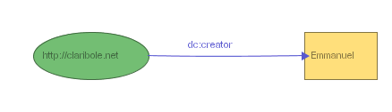 | 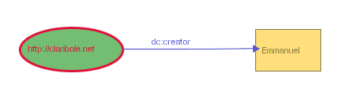 |
Figure 17-a: Model rendered without the stylesheet (SVG version) |
Figure 17-b: Model rendered with the stylesheet (SVG version) |
Aside from the width, it is also possible to change the pattern used to paint edges and nodes' border using gss:stroke-dasharray. This property is inspired from the SVG stroke-dasharray property and controls the pattern of dashes and gaps used to paint the node borders and edges. Its default value is gss:Solid (figure 17-a and 17-b), but the property can also take one of the following values:
| 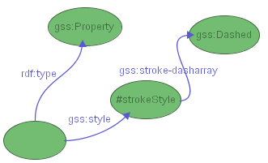 | 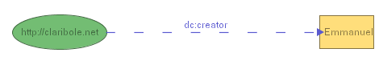 |
Figure 17-c: assigning a dashed pattern to properties (SVG version) and (SVG version) |
|
| 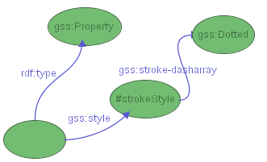 | 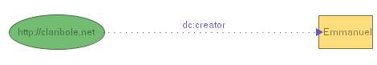 |
Figure 17-d: assigning a dotted pattern to properties (SVG version) and (SVG version) |
|
| 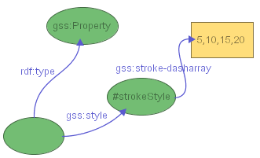 | 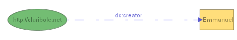 |
Figure 17-e: assigning a custom pattern to properties (SVG version) and (SVG version) |
|
As shown in figure 18, the fill color corresponds to the node’s interior color. It is specified using the gss:fill property and, as gss:stroke, can take any CSS2 color value. Note that in the case of property selectors, the fill color has an effect only if the property is laid out as part of a table grouping properties (see Layout Instructions). It then defines the interior color of the table cell representing the property.
Figure 18: Stylesheet defining a stroke color and a fill color for resources in the http://www.w3.org/ domain, and for all literals (SVG version)
Figure 19 gives an example of a model rendered using the stylesheet from figure 18.
Figure 19: Application of the stylesheet from figure 18 to a model (SVG version)
As shown in figure 20, it is possible to change several properties of the font used to render the text labels associated with nodes and edges. Four properties are supported and accept the same values as defined by the CSS 2 Specification:
Figure 20: Stylesheet for changing the font properties of resources, literals and properties (SVG version)
Figure 21-a shows a model with the default font used for all labels. Figure 21-b shows the same model displayed using the stylesheet from figure 20.
Figure 21-a: Model without stylesheet (SVG version)
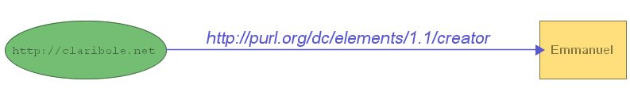Figure 21-b: Model with stylesheet (SVG version)
In addition to the core styling properties, GSS features three other properties that can only be applied to the nodes of the graphs (i.e. to resources and literals): gss:text-align, gss:icon and gss:shape.
The gss:text-align property makes it possible to change the position of the label with respect to the associated node. The default position for the label is to be centered inside the node. This property can take the following values:
Aligning the text outside the node is especially useful when using custom shapes that do not adapt their width to the label's length (see below). Figures 26 and 27 give an example of use of this property.
By default, all resource nodes are represented by ellipses, and all literal nodes are represented by rectangles, as this is the convention found in many documents like the RDF Model and Syntax Specification, the RDF/XML Syntax Specification (Revised) or the RDF: Concepts and Abstract Data Model.
However, it is possible to change the shape of resource and literal nodes using the gss:shape property (we will see in a later section that it is also possible to use bitmap icons as node shapes). The user can choose to use predefined shapes, by setting one of the following resources as the value of this property:
or one of the following, knowing that in each of these cases the node's width is not adjusted to fit the entire label, but remains approximately equal to the node's height:
Figure 22-a shows a stylesheet assigning a triangular shape to all literals typed as integers. Figure 22-b gives an example of a model rendered using this stylesheet.
Figure 22-a: Assigning a triangular shape to all literals typed as integers (SVG version)
Figure 22-b: Literals typed as integers represented as triangles (SVG version)
Aside from predefined shapes, it is also possible to define custom shapes, following the Glyph model described in [1], [2] and [3]. Basically, as shown in figures 23 and 24, this model represents a shape as a list of normalized float numbers (between 0.0 and 1.0) which each represent the distance from the center of the shape's bounding circle to a vertex (0.0 means that the vertex coincides with the center of the bounding circle, 1.0 means that the vertex is on the bounding circle). The angle between each vertex is constant and equal to 2*Pi/N radians where N represents the number of vertices. In GSS, a shape represented using this model is encoded in a literal value which consists of a list of normalized floats between square brackets (each representing the distance from the center to a vertex) plus an optional float number in range [0,2*Pi/N] representing the orientation of the shape (considered equal to 0 if not specified). The shape’s value in figure 23 corresponds to the shape in figure 24. IsaViz provides a graphical front end for specifying Graphical Stylesheets, so that users do not have to author GSS directly in RDF if they do not want to. This front end makes use of the ZVTM Glyph Factory widget (provided by the ZVTM graphical toolkit upon which IsaViz relies) to allow the user to specify custom shapes by direct manipulation. Figure 25 gives an example of a model rendered using the stylesheet from figure 23.
Figure 23: Assigning a custom shape to all literals typed as integers (SVG version)
Figure 24: ZVTM Glyph Factory
Figure 25: Custom shape for literals typed as integers (SVG version)
Custom shapes can also be specified using an SVG-like list of (x,y) coordinates for polygons. The list has to be enclosed inside curly braces {} and each x,y couple is separated from the next one by a semi-colon. More formally, the list must match A (there must be at least three (x,y) couples to define a polygon):
| A -> L |
| L -> '{' CC '}' |
| CC -> C1 ';' C1 ';' C1 | C1 ';' C1 ';' C1 ';' C2 |
| C1 -> X ',' Y |
| C2 -> C1 C2 | C1 |
| X -> integer |
| Y -> integer |
You must provide absolute coordinates for each (x,y) couple. Note that these only serve to define the polygon's aspect. Eventually, the polygon's size and location will be computed by GraphViz/dot and adjusted by IsaViz to fit in the graph. But its aspect will remain the same. This means that in the example of figure 26, specifying the following list of coordinates would have produced the same result, as both lists contain proportional coordinates:
{40,-60;40,30;10,60;-60,60;-60,-60}
Figure 26: Assigning a custom polygon to all resource nodes and placing their label below them (SVG version)
Figure 27: Custom shape (SVG version)
There is currently no graphical front end for specifying such polygons.
Note: as for gss:Circle and other shapes, the width of custom shapes is not adjusted to fit the entire label (although you can manually resize the nodes using the move/resize tool, represented by this icon:  ). If the label is too wide to fit inside the shape, it crosses the shape’s boundary. This can be aesthetically unpleasant, so it is better to use these shapes in combination with a gss:text-align property that puts the label out of the shape (e.g. gss:Below), unless you are sure that the associated labels will always be short (e.g. small integers).
). If the label is too wide to fit inside the shape, it crosses the shape’s boundary. This can be aesthetically unpleasant, so it is better to use these shapes in combination with a gss:text-align property that puts the label out of the shape (e.g. gss:Below), unless you are sure that the associated labels will always be short (e.g. small integers).
In addition to custom and predefined shapes, it is also possible to use bitmap icons as node shapes using the gss:icon property. Icons can be assigned statically, by specifying a URI pointing to a bitmap image, or dynamically by using a special instruction named gss:Fetch. When the GSS engine encounters this instruction, it retrieves the content pointed at by the resource's URI and tries to instantiate it as a bitmap icon. If the process is successful, the icon becomes the node's shape. If it fails, the node is represented using the default ellipse shape.
Figure 28 shows a fragment of the GSS stylesheet for foaf. This fragment contains two selectors. The first one selects resources of type foaf:Organization and assigns them an icon statically defined as being at this URI:
http://www.w3.org/2001/11/IsaViz/gss/foaf/org.png
The second selector selects resources of type foaf:Image and tells the GSS engine to retrieve the content of the selected resource dynamically (when actually applying the stylesheet to the model) and to instantiate it as a bitmap image. Therefore, when applied to the model in figure 29, the stylesheet assigns org.png to the resource on the left, which is a foaf:Organization, and retrieves the content pointed at by resource http://www.w3.org/Icons/w3c_home.png. It tries to instantiate this content as a bitmap image, succeeds, and displays it as an icon, in this case the W3C logo.
Note: the stylesheet does many other things, like hiding rdf:type statements and aligning text labels. You can download the GSS stylesheet for foaf and have a look at the whole set of selectors and styling instructions.
Figure 28: A fragment of the GSS stylesheet for foaf, assigning icons to resources of type foaf:Organization and foaf:Image (SVG version)
Figure 29: Bitmap icons as node shapes in a foaf document (SVG version)
Aside from styling instructions, GSS also features properties to hide selected resources, properties and literals. Visibility properties are attached directly to selectors, not to style nodes. There are two visibility properties, inspired by CSS:
Although everything is visible by default, gss:visibility=visible is interesting if you want to show something that is being hidden by a stylesheet applied prior to the one you are defining (we have seen earlier that, as CSS stylesheets, GSS stylesheets can be cascaded).
gss:visibility=gss:Hidden and gss:display=gss:None both hide the entities they select. The difference between the two is that gss:visibility=gss:Hidden hides entities after the layout process has occurred, whereas gss:display=gss:None hides them before computing the graph layout. This means that in the first case the layout is not impacted by the fact that some entities are hidden (hidden entities occupy space, even though they are not visible), whereas in the second case the layout is changed (hidden entities are not taken into account in the layout computation, resulting in a more compact graph). The following figures illustrate this difference.
| Initial Representation (nothing hidden) | 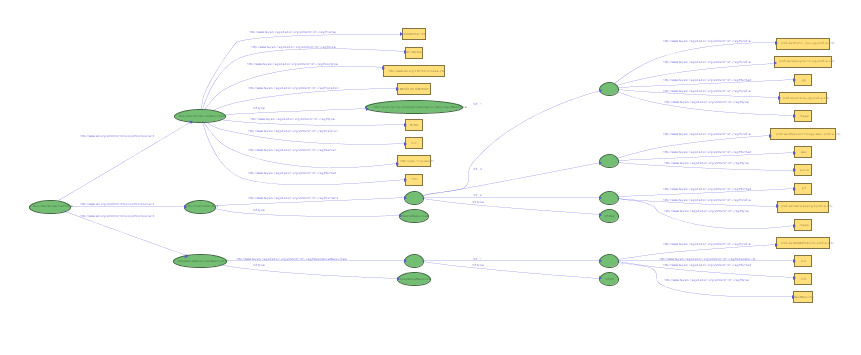 (SVG version) |
| 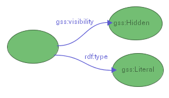 (SVG version) visibility=hidden |
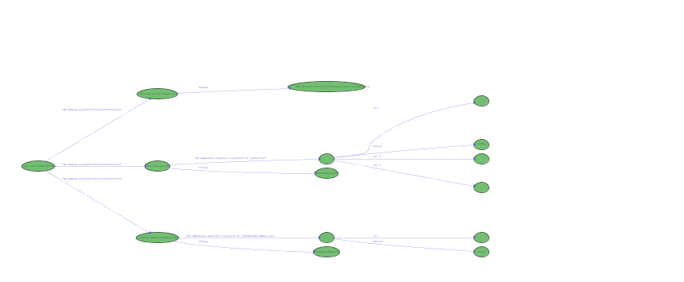 (SVG version) |
| 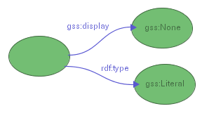 (SVG version) display=none |
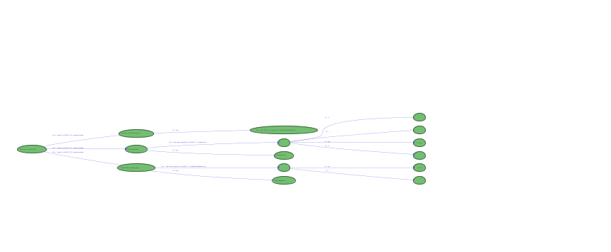 (SVG version) |
In IsaViz, the default way to represent RDF models, which are structured as directed graphs, is to draw them as node-link diagrams. This method works well for conveying the graph structure of the models, but has some drawbacks. For instance, depending on the initial layout computed by GraphViz/dot, some resources can have properties whose values are far from one another, making it difficult to get a summary/overview of all of them without unzooming and thus loosing relevant details. To address this problem, IsaViz provides a textual Property Browser that groups all property-value pairs associated with a specific resource subject in a single window (figure 30).

Figure 30: IsaViz Property Browser
This solution works fine, but is not entirely satisfactory as it involves additional actions from the user to display the properties. Moreover it requires her to switch from one window to the other, and the Property Browser is not tightly coupled to the main graphical representation. GSS offers an alternative solution by making it possible to group some or all of the properties associated with a subject resource in a table inside the graph.
The gss:layout property can take two values:
Figures 31-a and 31-b show the same simple model using gss:NodeAndArc and gss:Table respectively.
|
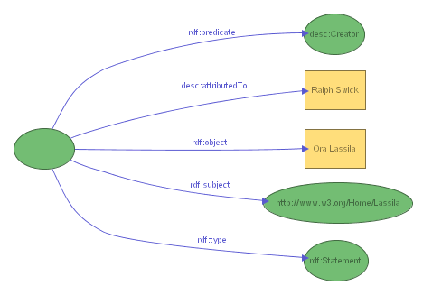
Figure 31-a: node and arc layout (SVG version) |
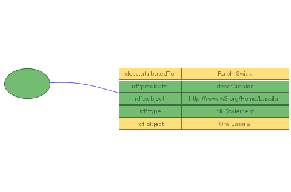
Figure 31-b: table layout (SVG version) |
As with visibility properties, layout properties are attached directly to selectors, not to style nodes. The constraints on this GSS property are a little more complex than for the previous ones, and depend on what type of entity they are applied to (resource, literal or property), so it is worth clarifying them. First, for each resource, there can only be one table. Not all properties need to be grouped inside the table, but those which are will be in the same table. Other constraints depend on what type of entity the instruction is applied to.
A table layout instruction associated with a property selector will put the statement's property and corresponding object inside the subject's table, no matter what this subject is. This will occur only if the object is a literal, or if it is a resource which is the object of at most one statement (the one being selected) and which is the subject of no statement.
A table layout instruction associated with a literal selector will put the literal and the property which has this literal as object inside the subject's table, no matter what this subject is. This should always work, as literals are always the object of a single statement and cannot be the subject of any statement.
A table layout instruction associated with a resource selector will put the resource and the property which has this resource as object inside the subject's table. This will only work if the resource is the object of exactly one statement and is the subject of no statement.
Of course, all GSS styling instructions like gss:fill or gss:font-size can be used in combination with the table layout.
Figures 32-a through 32-c give examples of GSS rules using the gss:table instruction. The stylesheet in figure 32-a requests that all literals in the model (and their associated properties) be laid out in tables. The stylesheet in figure 32-b requests that all properties (and associated objects) in the foaf namespace be laid out in tables. The stylesheet in figure 32-c requests that all resources which are the object of a foaf:homepage statements be laid out in tables. Note that according to the constraints mentioned earlier, this will actually only happen for object resources which are the object of no other statement, and which are the subject of no statement whatsoever. This last stylesheet also assigns fill and stroke colors to the objects.
|
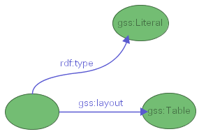
|
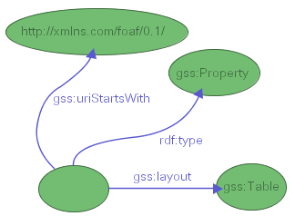
|
|
|
Figure 32-a: (SVG version) |
Figure 32-b: (SVG version) |
Figure 32-c: (SVG version) |
Properties laid out in tables can be sorted using gss:sortPropertiesBy. This GSS instruction can only be associated with resource selectors, as the sorting is obviously done with respect to subjects of statements, which can only be resources. This property accepts four values:
Figure 33 gives an example of sorting properties associated with resources of type foaf:Person by namespace.
Figure 33: Sorting properties by namespace (SVG version)
GSS also lets you specify custom orderings by enumerating the properties using rdf:Seq, as shown in figure 34. If the GSS engine encounters properties in a table, which are not present in the enumeration, these are simply put at the end of the table.
Figure 34: Sorting properties according to an enumeration (SVG version)
GSS being an RDF vocabulary, you can edit Graph Stylesheets as you would edit any other RDF model, using IsaViz or any other textual/visual RDF editor. However, because of the complexity inherent to the fact that GSS is based on RDF, this can quickly become cumbersome as stylesheets grow. To address this problem, IsaViz features a graphical front-end called GSS Editor that makes it possible to edit stylesheets visually without having to write a single line of RDF. GSS Editor can be accessed through IsaViz by clicking on the Edit Stylesheet button after having selected a stylesheet in the Definition window's stylesheet list, or as a standalone application using one of the provided launch scripts (gssedit.bat or gssedit.sh). The main Java class to call is :
org.w3c.IsaViz.GSSEditor
GSS Editor's interface, shown in figure 35, can seem a little daunting at first, but reading this section should make it clearer, provided that you have a general understanding of what is GSS and how it works (in other words, that you have read the previous sections). Note that in many text fields, you can use prefix bindings instead of full URIs, as long as these bindings have been declared in IsaViz's Definition window (Namespaces tab).
Figure 35: GSS Editor
The GUI is composed of two main panels: the lower panel, Styles, contains style declarations ; the upper panel is itself made of three tabbed panels called Resources, Literals and Properties, which hold GSS Selector declarations for the three kinds of entities. The Resources panel is slightly more complicated than the other two, as it features yet another subpanel called Custom Enumerations which is used to declare property enumerations used to sort the properties laid out in tables.
The Resources, Literals and Properties panels all work in essentially the same way. A GSS Selector (which corresponds to the left-hand side of a GSS rule) is composed of constraint declarations. Only entities meeting all the constraints declared by a selector will be selected by it. In GSS Editor, selectors are grouped into three tables (one in each of the above-mentioned panels) depending on what kind of entity they select (resources, properties or literals). In each of these tables, selectors are composed of a mandatory gray line, plus zero or more white lines which hold constraint declarations (called conditions) for the selector. A selector can of course be composed of more than one condition. Some conditions, like subject of a statement, are refined by subconditions, specified in the second column. In any case, the value associated with the condition is specified in the third column. The remaining columns are used, as we will see later, to associate styling, visibility, layout and sorting instructions with selectors. Conditions and whole selectors can be added or removed using the four buttons at the top of each selector panel.
Figure 36 gives an example of two resource selectors. The first one declares an equality constraint on the URI of the resource(s) to be selected (this will generate a gss:uriEquals property for this selector). The second one declares two selection conditions: the resource(s) must be the subject of an rdf:type statement, and the value of this statement must be http://xmlns.com/foaf/0.1/Image.
Figure 36: Resource Selectors in GSS Editor
Note that a selector composed of only a gray line will select every resource (or literal or property, depending on the table to which it belongs), as no condition is associated with it. Note also the following important subtilty: the selectors expressed in figures 37-a and 37-b are different. The first selector requires both conditions to be met by the same statement (property type and value), whereas the second one only requires that the resource be the subject of an rdf:type property and that one of the properties associated with the resource to be selected has a value of http://xmlns.com/foaf/0.1/Image. In other words, the first selector will only select resources which are the subject of an rdf:type property whose value is http://xmlns.com/foaf/0.1/Image, whereas the second selector will select resources which are the subject of an rdf:type statement, no matter its value as long as one of the statements which have this resource as subject has value http://xmlns.com/foaf/0.1/Image (this can, but need not be, the rdf:type statement).
Figure 37-a: Resource Selectors in GSS Editor
Figure 37-b: Resource Selectors in GSS Editor
The selectors presented in figures 37-a and 37-b will respectively generate the RDF statements in figures 38-a and 38-b.
Figure 38-a: Selecting resources subject of an rdf:type property whose value is foaf:Image (SVG version)
Figure 38-b: Selecting resources subject of an rdf:type property and subject of a property whose value is foaf:Image (SVG version)
Each selector's first line (the gray one) contains information about the selector's weight. This value represents the priority of the selector in case of conflict between selectors and cannot be changed. It is computed by IsaViz's GSS engine to choose the most specific selector when several selectors apply to a resource (or property or literal). A higher weight corresponds to a higher priority.
As shown in figure 39, styling, visibility, layout and sorting instructions are associated with selectors using (only) the gray lines of each selector. Visibility can be set to Visible, Hidden or Not Displayed, which correspond respectively to gss:visibility=gss:Visible, gss:visibility=gss:Hidden and gss:display=gss:None. Layout is specified in a similar way and can be set to Node and Arc or Table. As we have seen in Section 7. Layout Instructions, layout instructions apply to the entities selected by the selector, not the objects associated with those entities. Furthermore, table layout instructions might be ignored if the entities to which they apply do not meet all requirements for being displayed in a table.
Figure 39: Associating a layout instruction with a selector
As we have seen in Section 5. Styling Instructions, styling properties are not directly associated with selectors. Instead, one or more styling properties can be attached to a style node, which is itself pointed at by one or more selectors using the gss:style property, thus enabling the reuse of already defined styles. This is reflected by GSS Editor as follows: styles are defined in a separate table in the lower part of the main window (figure 40). Each style is defined on one row and has a unique ID. These IDs are used to refer to styles from the Styles column of the resource, literal and property selector tables. A selector can refer to several styles, separated by commas (as shown in the last but one row of figure 39). GSS Editor will accept all values accepted by the GSS vocabulary (see Section 5. Styling Instructions), that is to say all values allowed by the CSS 2 Specification, plus some additional values from the SVG 1.0 Specification and new ones for the Shape and Icon columns.
Figure 40: Styles Panel
For instance, the resources selected by the last selector of figure 39 will be assigned:
Standard shapes such as rectangle, ellipse or triangle can be chosen from the drop-down list associated with the shape column. As we have seen before, the ZVTM also offers a graphical front-end for specifying gss:shape values by direct manipulation (figure 41). However, gss:polygon values can only be entered by hand for now, following the grammar defined in Section 5. Styling Instructions - Node Shape, as there is no front-end for their definition.
Figure 41: ZVTM Glyph Factory
Icons can be specified statically by choosing a local file or entering a URI pointing to a bitmap image, but also dynamically by choosing Fetch, which corresponds to instruction gss:Fetch (see Section 5. Styling Instructions - Bitmap Icons) for more details.
Sorting criteria can be associated with resource selectors and apply to the property/value pairs associated with the selected resources and laid out in a table. GSS features four predefined criteria: by name, by namespace, by name (reversed) and by namespace (reversed), all available from the drop-down list in the last column of the resource selector table (figure 39).
It is also possible to define custom criteria by specifying property enumerations. These are defined in the Custom Enumerations subpanel of the resource selector table (figure 42). As for styles, each enumeration has a unique ID, which is used to refer to it from the resource selector table's last column. To assign such an enumeration to a selector, choose Enumeration... and then click on the appropriate row in the Custom Enumerations subpanel.
Figure 42: Specifying Sorting Criteria using Property Enumerations
The enumeration consists of a comma-separated list of property names, entered either as full URIs or using namespace prefix bindings (those bindings must be declared in IsaViz's Definition window, in the Namespaces tab).
[1] Jean-Yves Vion-Dury and Francois Pacull, A structured Interactive Workspace for a Visual Configuration Language, Proceedings of Visual Languages ’97, pp132-139, 1997, Capri, Italy
[2] Jean-Yves Vion-Dury, Un générateur de composants pour le traitement des langages visuels et textuels, Université Joseph Fourier - Grenoble 1 (PhD thesis), 1999, Domaine Universitaire, Saint Martin d'Hères, France
[3] Emmanuel Pietriga, Environnements et langages de programmation visuels pour le traitement de documents structurés, Institut National Polytechnique de Grenoble (PhD thesis), Novembre 2002, Grenoble, France
[4] Bert Bos, Håkon Wium Lie, Chris Lilley and Ian Jacobs, Cascading Style Sheets, level 2 - CSS2 Specification, W3C Recommendation, 12 May 1998, http://www.w3.org/TR/REC-CSS2/
[5] Jon Ferraiolo (Editor), Scalable Vector Graphics (SVG) 1.0 Specification, W3C Recommendation, 04 September 2001, http://www.w3.org/TR/SVG/
[6] Emmanuel Pietriga, ZVTM (Zoomable Visual Transformation Machine), 2003, http://zvtm.sourceforge.net
Emmanuel Pietriga |
{kind=link}
{kind=link}
{kind=link}
{kind=link}
{kind=link}
{kind=link}
{kind=link}
{kind=link}
{kind=link}
{kind=link}
{kind=link}
{kind=link}
{kind=link}
{kind=link}
{kind=link}
{kind=link}
{kind=link}
{kind=link}
{kind=link}
{kind=link}
{kind=link}
{kind=link}
{kind=link}
{kind=link}
{kind=link}
{kind=link}
{kind=link}
{kind=link}
{kind=link}
{kind=link}
{kind=link}
{kind=link}
{kind=link}
{kind=link}
{kind=link}
{kind=link}
{kind=link}
{kind=link}
{kind=link}
{kind=link}
{kind=link}
{kind=link}
{kind=link}
{kind=link}
{kind=link}
{kind=link}
{kind=link}
{kind=link}
{kind=link}
{kind=link}
{kind=link}
{kind=link}
{kind=link}
{kind=link}
{kind=link}